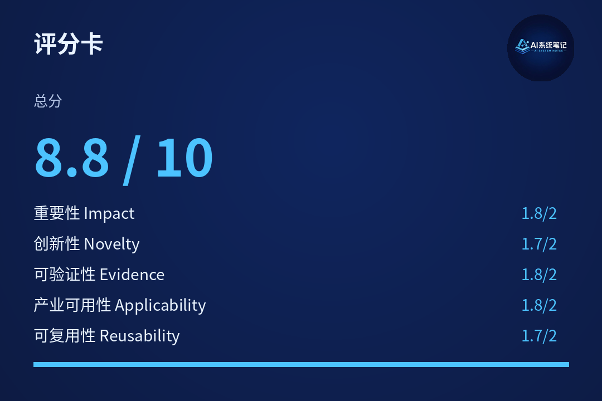
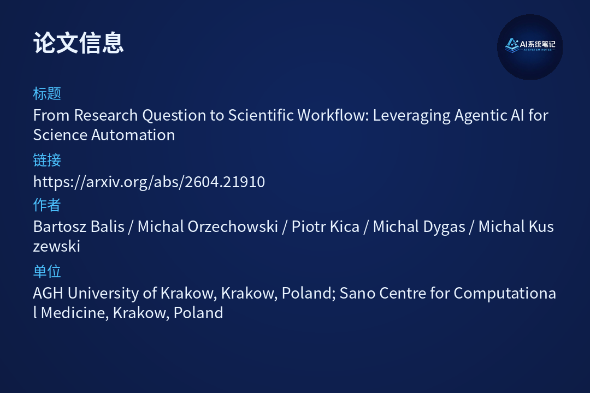

【论文速记】科研Agent，怎样从问题走到可执行工作流？
一句话结论：真正能进入科研生产的Agent，不只是会写代码，而是要把研究意图稳定地转成可复现、可审计、可执行的工作流。


A. 研究问题
科学工作流系统已经能处理调度、容错、资源管理和数据staging，但"从研究问题到工作流规格"的语义转换仍然高度依赖人工。研究者需要把自然语言问题翻译成具体参数、数据文件、并行粒度和DAG，这一步既需要领域知识，也需要基础设施经验。
这篇论文要解决的，是让Agent参与科研生产时最关键的一段链路：不是直接生成一段可能能跑的代码，而是把研究意图稳定地转成可复现、可审计、可执行的workflow。
B. 核心贡献
- 三层架构：语义层（LLM提取结构化intent）、确定性层（验证过的generator产出DAG）、知识层（markdown格式的Skills存放词汇映射、参数约束、优化策略）。LLM非确定性被限制在intent extraction。
- Skills作为专家可维护的知识载体：不是embedding或模型权重，而是纯markdown表格（如"European"→"EUR"），可版本控制、可审计、无需ML背景即可编辑。
- 端到端agentic pipeline：四个Agent（Conductor、Workflow Composer、Deployment Service、Execution Sentinel）+ human-in-the-loop验证 + deferred workflow generation。
- Skill驱动的执行时优化：Skills不只用于语义翻译，还编码优化策略（如tabix提取vs全量下载），实现92%数据传输减少。
C. 方法/框架
核心设计是分层 + Deferred Generation。
语义层：LLM把自然语言问题抽取为结构化ResearchIntent（populations、chromosomes、regions等字段），必须遵循JSON schema。LLM只做intent提取，不生成workflow。
确定性层：验证过的generator把intent转成可执行DAG。关键设计是deferred generation——先部署基础设施、测量实际数据大小和可用vCPU，再生成最终DAG。这样并行度和资源分配基于实测而非估算。
知识层：Skills是markdown文档，包含：
- Vocabulary tables：如26个1000 Genomes population code映射
- Synonym tables："British"→"GBR"，"Han Chinese"→"CHB"
- Constraint tables：哪些参数组合合法
- Optimization tables：tabix提取50MB vs 全量943MB
Skills被LLM（语义层）和generator（确定性层）同时咨询。
Human-in-the-loop：Conductor在plan阶段和execution阶段各设置一个验证gate，科学家可批准、修改或拒绝。
D. 关键结果
1. Intent extraction accuracy（150 queries，5 tiers）
| 模型 | 无Skill | 全Skill |
|---|
| Claude Opus 4.6 | 44.0% | 83.3% |
| GPT-5.4 | 39.3% | 80.0% |
| GPT-4.1-mini | 27.4% | 62.0% |
- T1（显式代码）和T2（同义词）有Skill后达100%
- T3（隐性推理，如"breast cancer susceptibility"→BRCA1坐标）：Opus从10%→86.7%，但仍有局限；无Skill时全模型0-10%
- T4（参数不全）和T5（对抗性）仍有挑战
2. Deferred generation效果
| 区域 | 原始估计 | 实测后J | 数据下载 |
|---|
| HLA | J=100 | J=51 | 13GB→1.57GB (88%) |
| BRCA1 | J=100 | J=1 | 1.3GB→23MB (98%) |
| HBB | J=66 | J=1 | 2.1GB→1.4MB (99.9%) |
- 整体数据传输减少92%
- 小基因区域（HBB、APOE）节省超99%
3. 端到端性能（3 queries，Kubernetes 3节点48vCPU）
| Query | LLM | Provisioning | Execution | 总时间 | 成本 |
|---|
| Q1 HLA+BRCA1 | 14.5s (0.2%) | 245.7s (2.8%) | 8464s (97%) | 145min | $0.0007 |
| Q2 BRCA2+BRCA1 | 13.0s (2.2%) | 96.0s (16%) | 491s (81.8%) | 10min | $0.0008 |
| Q3 CFTR+HBB+APOE | 11.2s (0.7%) | 95.2s (6.1%) | 1457s (93.2%) | 26min | $0.0009 |
- LLM开销<15秒，可忽略
- 执行时间占82-97%，系统非瓶颈
- 所有query的intent extraction 5/5字段正确
- 成本<$0.001/query（Gemini 2.0 Flash）
4. 对比手工specification
Q3手工流程需5步、30-50分钟、涉及2类专家（领域+基础设施）。Conductor完成106秒（11s LLM + 95s基础设施），且合并了专家知识。
E. 产业启示
- 科研Agent的护城河不在prompt而在知识库：可维护的Skills、确定性执行层、可追踪审计链，比单次代码生成更有价值。
- "Deferred Generation"模式可泛化：先部署测量、再生成配置，适用于任何资源依赖型workflow（数据分析、风控建模、药物研发）。
- Human-in-the-loop不是妥协而是必要：科研要求可审计，关键决策gate保留人工验证是feature不是bug。
- Skills模式降低领域专家参与门槛：纯markdown、无需ML背景、可版本控制，让遗传学家自己维护population映射，而不是依赖ML工程师。
F. 一句话判断
这篇论文真正重要的地方，是把科研Agent从"代码生成"推进到"可复现工作流生成"，并给出了一个可落地、可审计、可由领域专家维护的架构范式。